Tecnologia e Ecologia para a Meliponicultura do Futuro
O MeliponaOS é um ecossistema inteligente de gestão meliponícola que une biologia ancestral e inovação. A plataforma auxilia criadores, pesquisadores e conservacionistas no monitoramento ambiental, georreferenciamento de pasto floral e saúde das colmeias nativas.
Para que serve o MeliponaOS?
Descubra os pilares fundamentais do ecossistema e como cada módulo potencializa seu meliponário.
Hex-Radar de Voo
Mapeia o raio de forrageamento de cada espécie em malha hexagonal 3D, identificando floradas de néctar, bebedouros seguros, ninhos-isca e pontos de risco ambiental.
Telemetria & Biometria
Monitoramento de dados vitais das caixas: temperatura interna de ninho, umidade relativa, pesagem automática e frequência bioacústica do enxame.
Enciclopédia Nativa
Acervo de fichas ecológicas completas das abelhas sem ferrão (Jataí, Mandaçaia, Uruçu, Tiúba e Mirim) com padrão de caixas racionais e medidas.
Diário de Manejo
Cadastre e acompanhe intervenções de campo em segundos: alimentação suplementar, divisão de ninhos, colheita sustentável e sanidade preventiva.
Importância da Preservação das Abelhas Sem Ferrão (ASF)
🌱 Polinização de Matas e Culturas
Responsáveis por polinizar até 90% das árvores da Mata Atlântica e do Cerrado, essenciais para a regeneração florestal e frutos nativos.🍯 Mel Medicinal e Gastronomia
Produzem méis singulares de altíssimo valor biológico, ricos em flavonoides, acidez nobre e propriedades antimicrobianas naturais.🛡️ Bioindicadores de Qualidade
Extremamente sensíveis a agrotóxicos e desmatamento. O monitoramento pelo Hex-Radar protege colmeias de contaminações fatais.CX-01
ColmeiaMandaçaia (Melipona quadrifasciata)
Visão Geral do Meliponário
Status biométrico, pesagem e monitoramento das caixas racionais em tempo real
📈 Atividade de Voo das Campeiras vs Temperatura
Correlação entre temperatura ambiente (°C) e taxa de saídas das operárias por minuto
🍯 Mel por Espécie
Volume estocado em potes de cerume (kg)
34.2 °C Estável
Termorregulação ideal nas melíponas
68% Ideal
Secagem facilitada do néctar
Zero Infestação 100% Seguro
Vinagre de maçã em todas as tampas
Enciclopédia de Espécies Nativas
Fichas biológicas completas, atributos ecológicos e raio de forrageamento
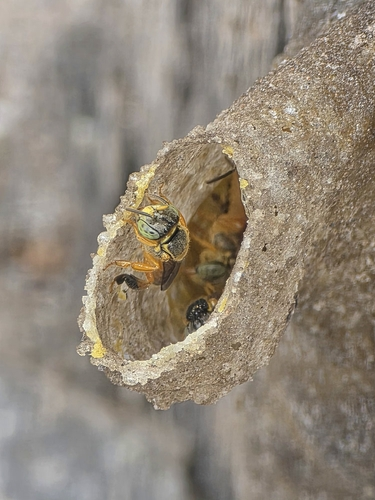
Macro da Abelha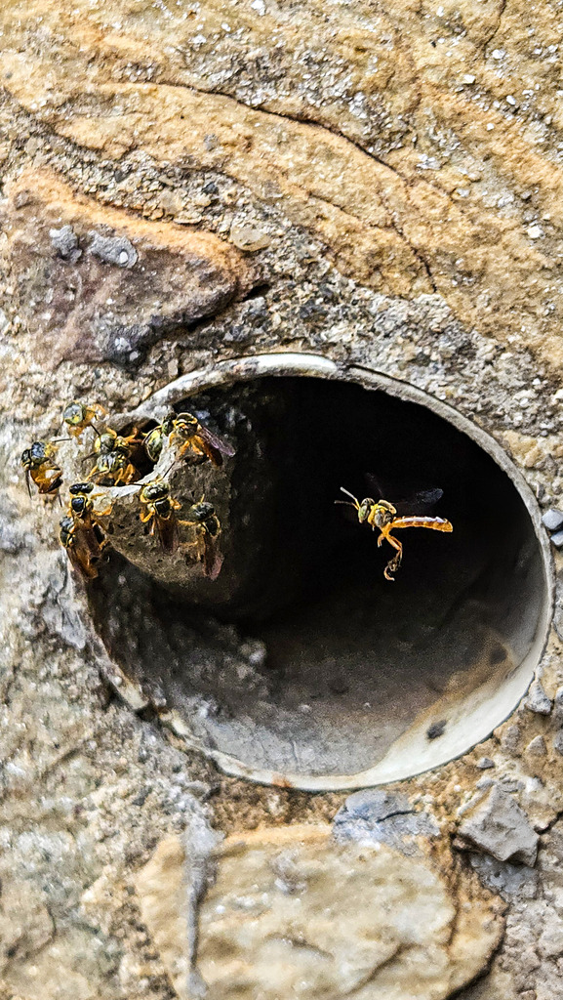
Estrutura do NinhoJataí
Tetragonisca angustula
Extremamente dócil e rústica. Constrói tubo de cerume fino na entrada com sentinelas pairadas em voo. Mel fino, límpido e com alto poder antimicrobiano.
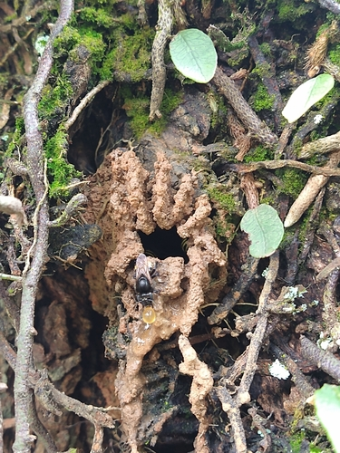
Macro da Abelha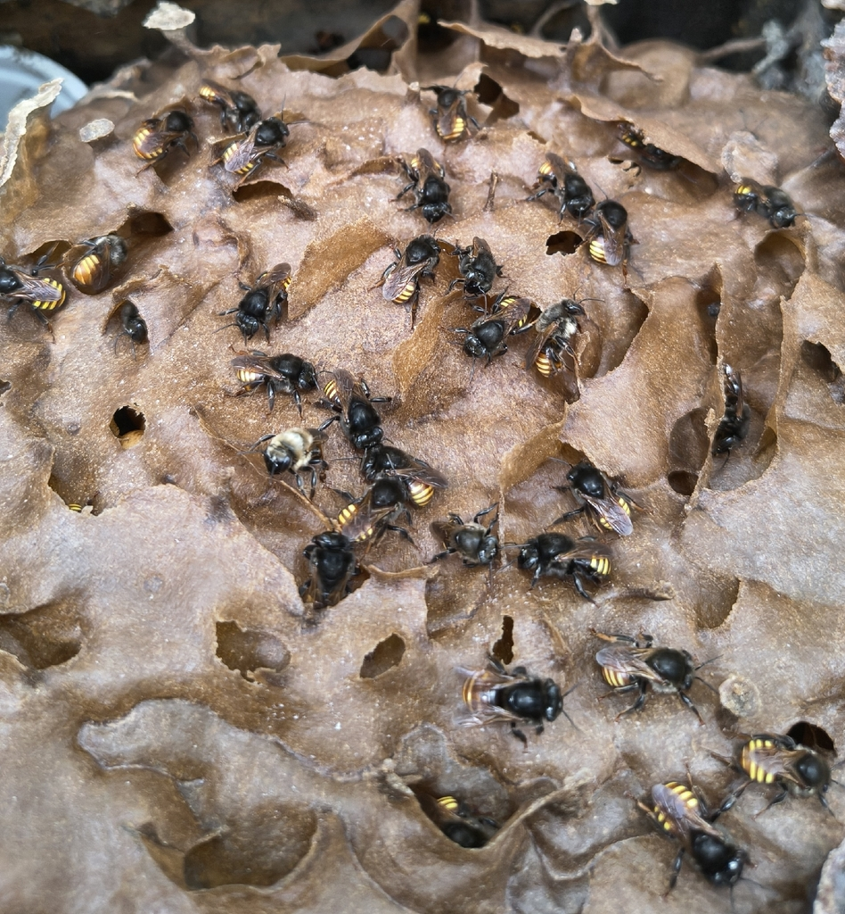
Estrutura do NinhoMandaçaia
Melipona quadrifasciata
Abelha robusta de corpo escuro com 4 listras amarelas no abdômen. Entrada típica estriada em barro convergente. Excelente polinizadora de solanáceas.
 Macro da Abelha
Macro da Abelha
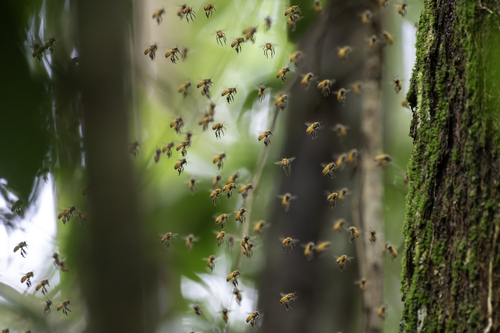
Estrutura do NinhoUruçu Amarela
Melipona flavolineata
Abelha imponente de tonalidade dourada viva. Produz mel nobre de sabor cítrico floral e densidade rica. Grande defensora das matas tropicais.
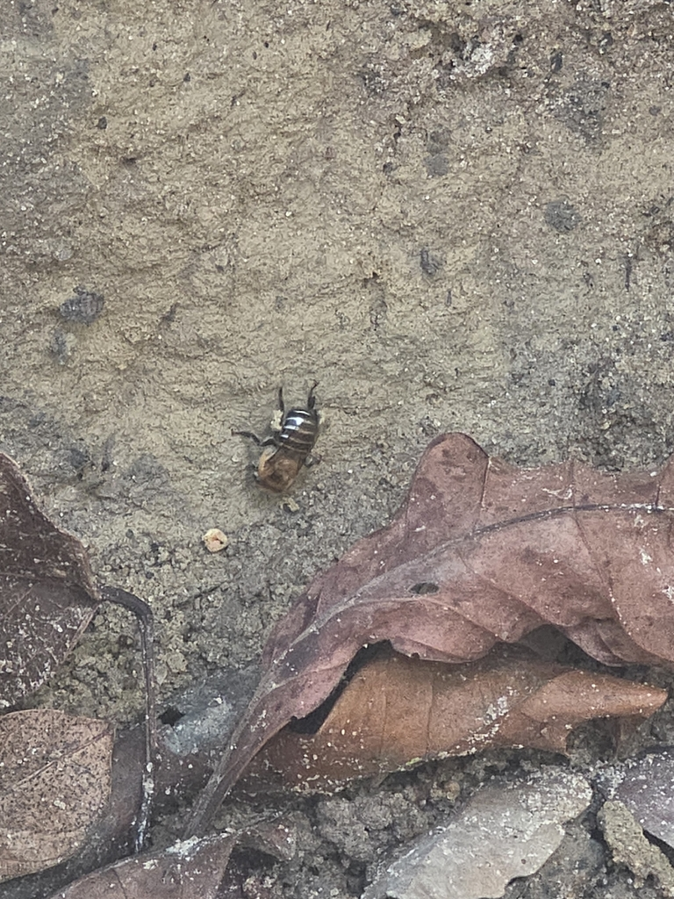
Macro da Abelha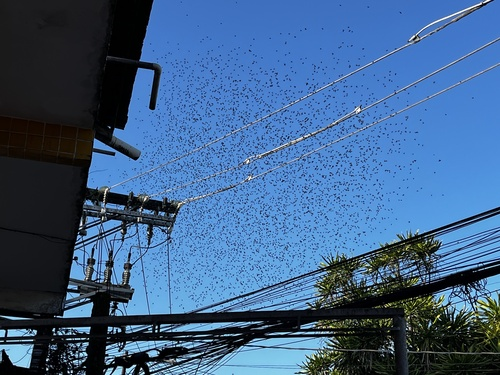
Estrutura do NinhoUruçu Nordestina
Melipona scutellaris
Uruçu verdadeira da Zona da Mata Atlântica e Nordeste. Excelente produtora de mel medicinal com enxames populosos e alta capacidade polinizadora.
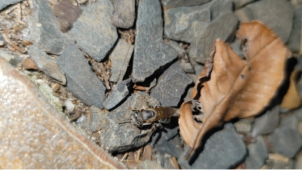
Macro da Abelha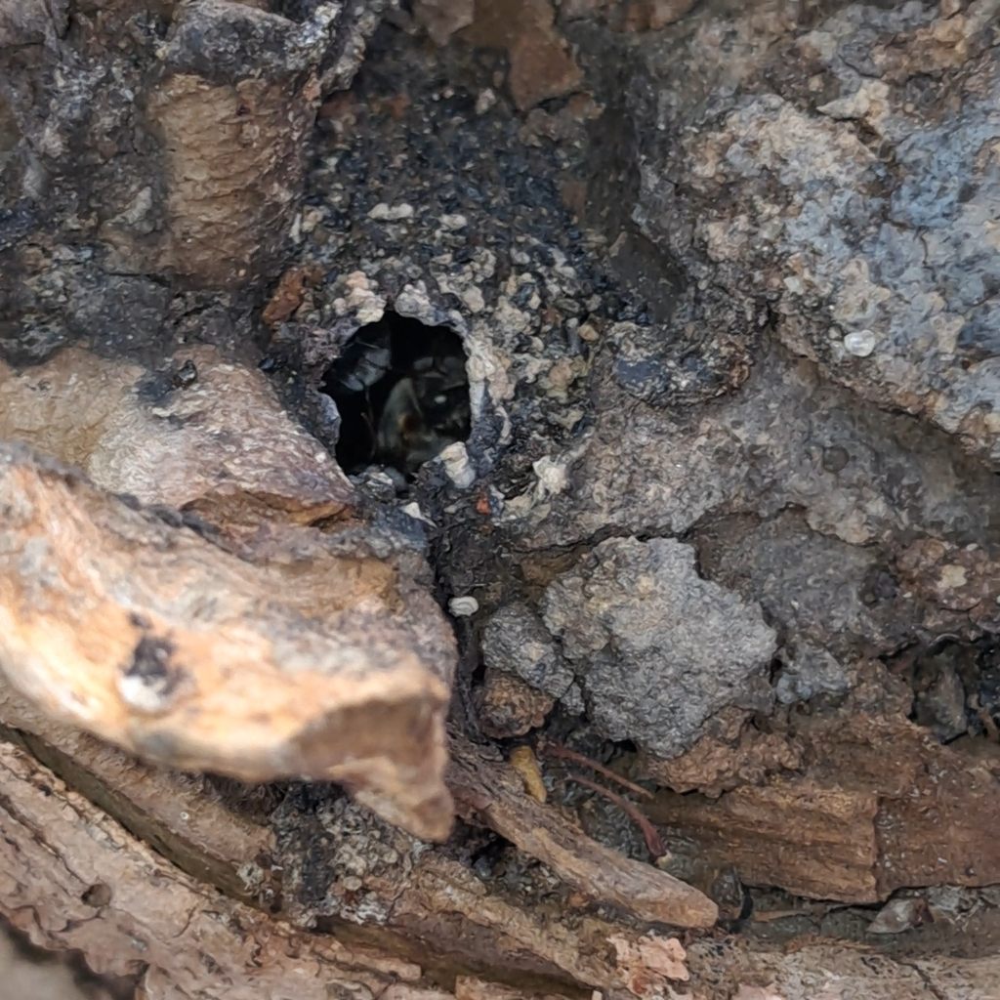
Estrutura do NinhoTiúba / Uruçu-Cinzenta
Melipona fasciculata
Rainha do Maranhão e Pará. Excelente forrageadora de dossel em matas de cocais e várzeas. Produz própolis com alta concentração de compostos fenólicos.
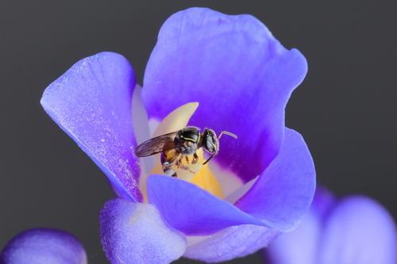
Macro da Abelha Estrutura do Ninho
Estrutura do Ninho
Mirim Droryana
Plebeia droryana
Abelha minúscula com grande capacidade de forragear em flores de corola fechada. Entrada feita em própolis com orifícios microscópicos.
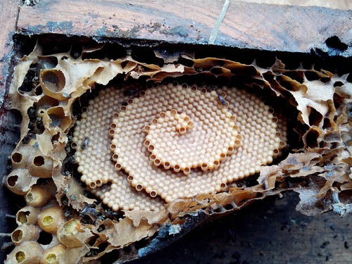
Macro da Abelha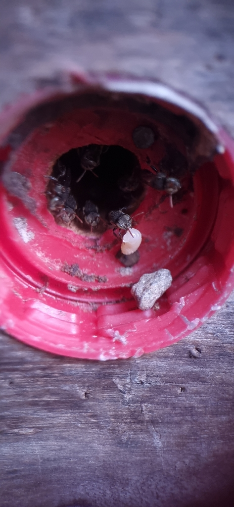
Estrutura do NinhoIraí
Nannotrigona testaceicornis
Muito dócil, excelente para ambientes urbanos e jardins residenciais. O tubo de entrada possui perfurações rendilhadas características que facilitam a aeração.
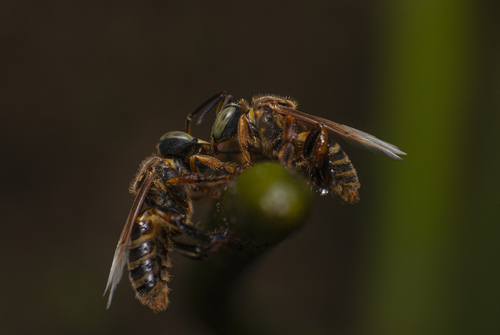
Macro da Abelha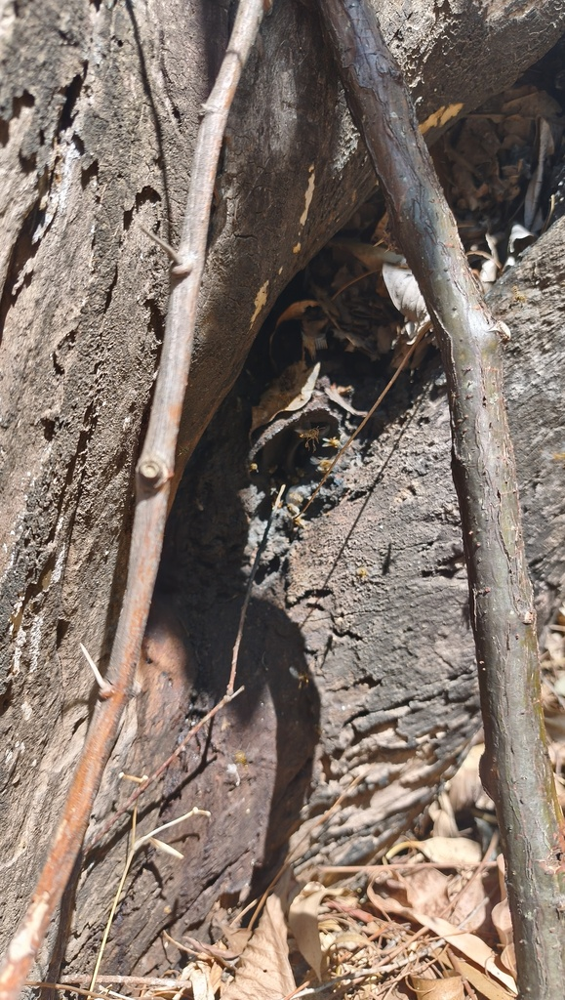
Estrutura do NinhoBorá
Tetragona clavipes
Enxames extremamente populosos e organizados. Constrói ninho em ocos volumosos e produz mel de sabor agridoce peculiar muito valorizado na gastronomia.
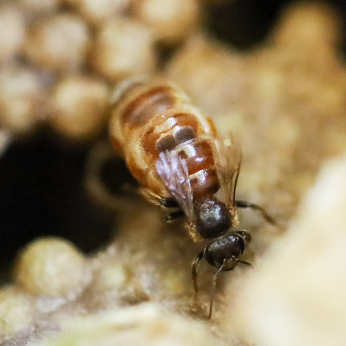
Macro da Abelha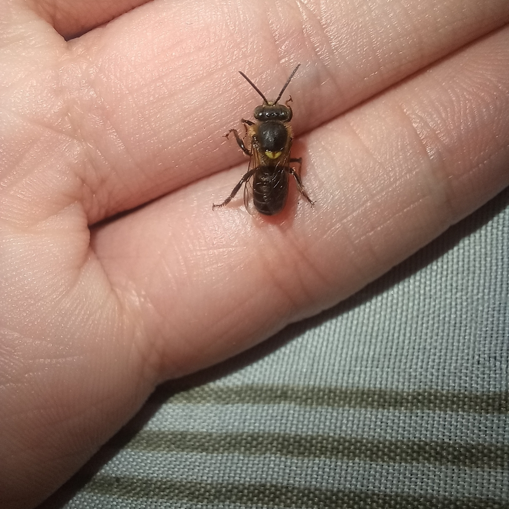
Estrutura do NinhoManduri
Melipona marginata
A menor abelha do gênero Melipona. Constrói entradas com raias de barro finíssimas. Produz mel muito doce, aromático e de alta viscosidade.
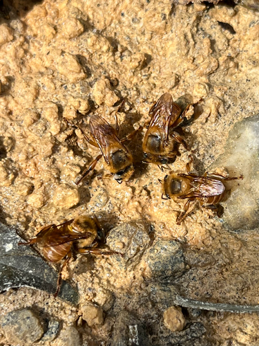
Macro da Abelha Estrutura do Ninho
Estrutura do Ninho
Bugia
Melipona mondury
Espécie nobre de altitude das Serras da Mata Atlântica. Tonalidade dourada acastanhada marcante. Mel de excelente buquê e acidez equilibrada.
🔬 Simulador 3D de Alcance de Voo & Ecologia
Simulação de voo procedural, bioma sazonal dinâmico e perímetro Hex-Radar proporcional em Three.js WebGL.
Diário Técnico de Manejo
Histórico cronológico detalhado com rastreabilidade sanitária e biometria
Fornecimento de 150ml de xarope invertido 1:1 com gotas de própolis no alimentador interno tipo Rosso. Colônia forte com consumo imediato pelas operárias.
Extração sanitária por sucção a vácuo na melgueira superior. Extraídos 2.4 kg de mel límpido com 26% de umidade natural e aroma floral intenso.
Transferência de 3 discos de cria maduros e 2 potes de cerume com alimento larval. Introduzida realeira nascente. Caixa filha instalada no local da mãe para receber as campeiras.